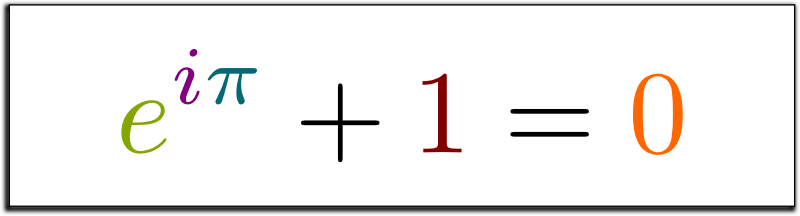

Euler's Identity
Euler's identity is a remarkable mathematical equation that connects five fundamental mathematical constants: e, i, π (pi), 1, and 0. It can be expressed as:
eiπ + 1 = 0
This equation encapsulates the relationship between exponential functions, imaginary numbers, trigonometric functions, and the concept of zero.
Explanation:
Euler's identity was discovered by the Swiss mathematician Leonhard Euler. It is considered one of the most elegant and profound equations in mathematics due to its concise representation of interconnected concepts.
The equation consists of several important mathematical constants. e represents Euler's number, a mathematical constant approximately equal to 2.71828. i denotes the imaginary unit, which is defined as the square root of -1. π (pi) is the mathematical constant representing the ratio of a circle's circumference to its diameter.
Remarkably, when e, i, and π are combined in the exponentiation operation in Euler's identity, the result is equal to -1, with an additional 1 on the other side of the equation. This connection between seemingly unrelated mathematical constants demonstrates the depth and beauty of mathematics.
